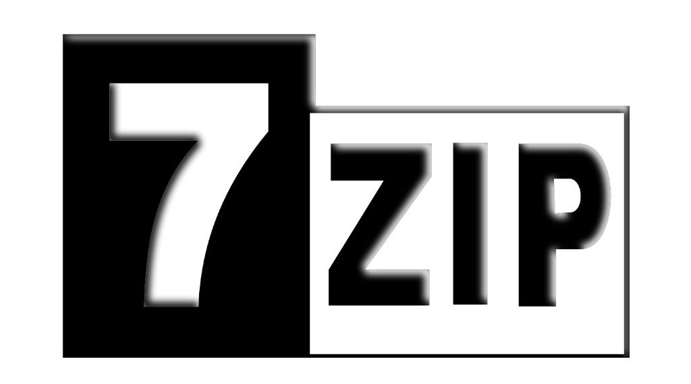

File Managers
Een file manager is een manier hoe je naar je files kan kijken. Dit zijn bijvoorbeeld je downloads, documenten, videos of foto's. Hier staan ook al je system files (denk aan system32 voor Windows of root voor Linux). De meest bekende is verkenner (file explorer op zijn Engels) die bij welke Windows installatie komt. Deze is vaak langzaam of onhandig, daarom zijn hier een paar alternatieven. Gebruik geen WinRAR of WinZip, voor deze moet je betalen en zijn niet FOSS. Ook is 7-Zip VEEL beter dan beide.
7-Zip
De meest betrouwbare en snelste is 7-Zip. 7-Zip gebruikt .7z files. Heeft ook een Linux versie. 7-Zip kan ook worden gebruikt in verkenner. Als hij gedownload is, moet je het volgende doen: bovenaan staat tools > options > klik 1x op het +je van de LINKER kolom (tot dat ze allemaal 7-zip zijn) > Apply > OK. Nu kan je hem gebruiken in verkenner.
PeaZip
PeaZip lijkt heel erg op verkenner en gebruikt een gemodificeerde versie van 7-Zip. Erg goed als je gewent bent aan verkenner. Echter raad ik wel nog steeds 7-zip aan.
Amaze File Manager
Amaze is een FOSS file manager voor Android. Het is de beste en mooiste die ik ooit heb gebruikt en werkt erg goed. Toch heeft hij wel weinig features en misschien vindt je MiXplorer een beter alternatief. MiXplorer is alleen closed source.